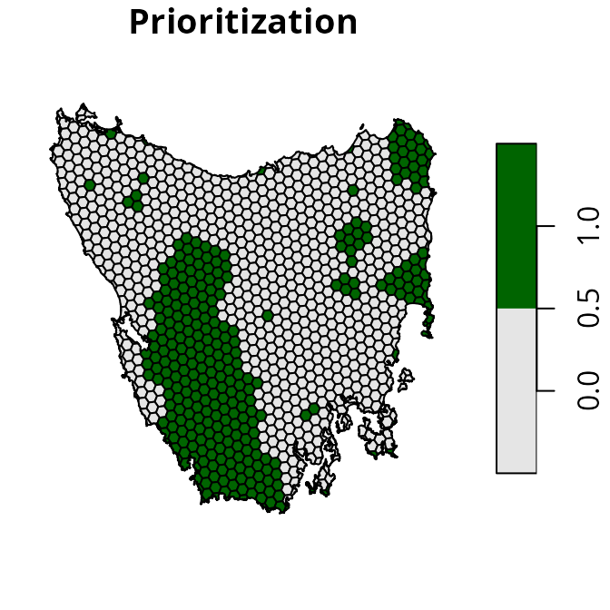
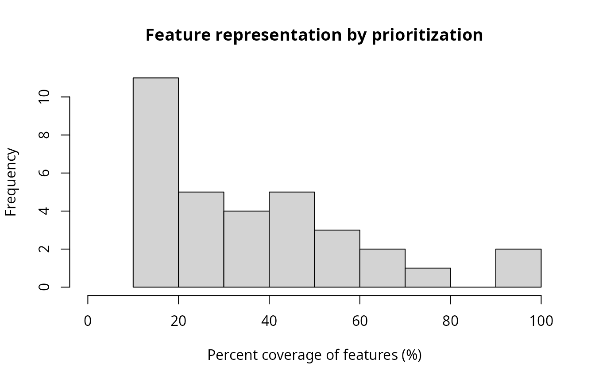
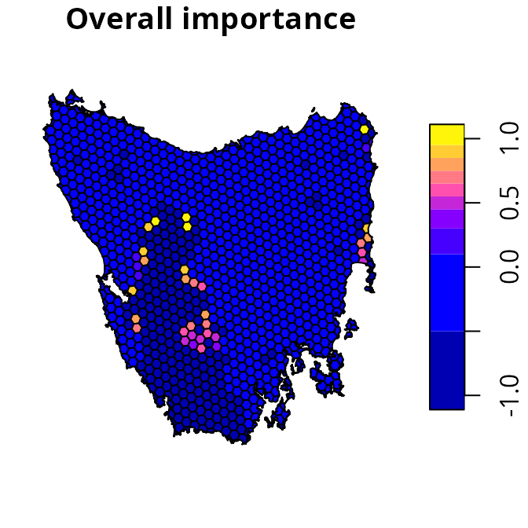
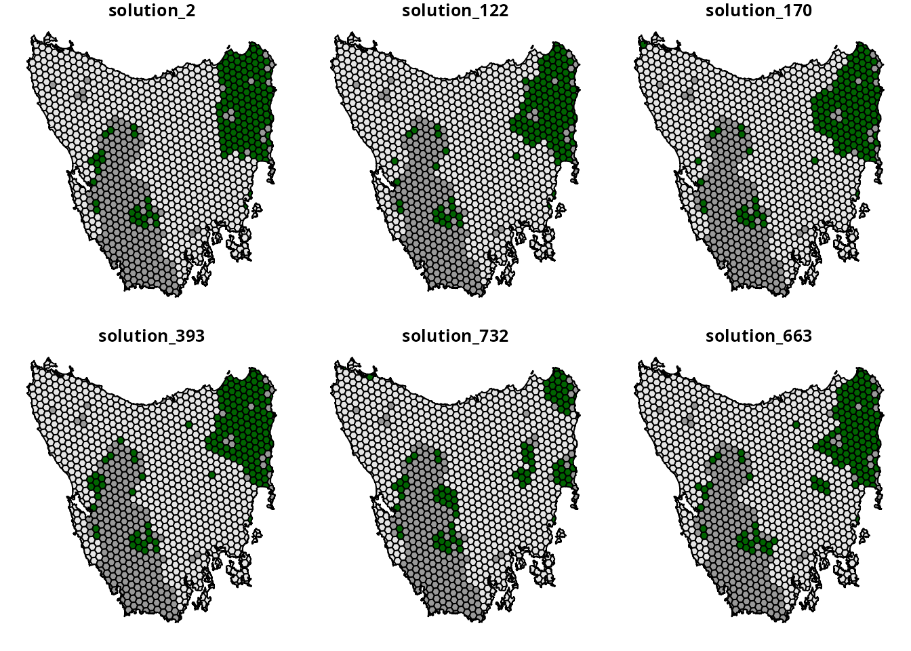

Introduction
The aim of this tutorial is to provide a short introduction to the prioritizr R package. It is also intended to help conservation planners familiar the Marxan decision support tool (Ball et al. 2009) start using the package for their work.
Data
Let’s load the packages and data used in this tutorial. Since this tutorial uses data from the prioritizrdata R package, please ensure that it is installed. The data used in this tutorial were obtained from the Introduction to Marxan course and the Australian Government’s National Vegetation Information System.
# load packages
library(prioritizrdata)
library(prioritizr)
library(sf)
library(terra)
library(vegan)
library(cluster)
# set seed for reproducibility
set.seed(500)
# load planning unit data
tas_pu <- get_tas_pu()
# load feature data
tas_features <- get_tas_features()Let’s have a look at the planning unit data. The tas_pu
object contains planning units represented as spatial polygons (i.e., a
sf::st_sf() object). This object has three columns that
denote the following information for each planning unit: a unique
identifier (id), unimproved land value (cost),
and current conservation status (locked_in). Planning units
that have at least half of their area overlapping with existing
protected areas are denoted with a locked in TRUE value,
otherwise they are denoted with a value of FALSE. We will
also set the costs for existing protected areas to zero, so that
existing protected areas aren’t included in the the cost of the
prioritization.
# print planning unit data
print(tas_pu)## Simple feature collection with 1130 features and 4 fields
## Geometry type: MULTIPOLYGON
## Dimension: XY
## Bounding box: xmin: 298809.6 ymin: 5167775 xmax: 613818.8 ymax: 5502544
## Projected CRS: WGS 84 / UTM zone 55S
## # A tibble: 1,130 × 5
## id cost locked_in locked_out geom
## <int> <dbl> <lgl> <lgl> <MULTIPOLYGON [m]>
## 1 1 60.2 FALSE TRUE (((328497 5497704, 326783.8 5500050, 326775…
## 2 2 19.9 FALSE FALSE (((307121.6 5490487, 305344.4 5492917, 3053…
## 3 3 59.7 FALSE TRUE (((321726.1 5492382, 320111 5494593, 320127…
## 4 4 32.4 FALSE FALSE (((304314.5 5494324, 304342.2 5494287, 3043…
## 5 5 26.2 FALSE FALSE (((314958.5 5487057, 312336 5490646, 312339…
## 6 6 51.3 FALSE FALSE (((327904.3 5491218, 326594.6 5493012, 3284…
## 7 7 32.3 FALSE FALSE (((308194.1 5481729, 306601.2 5483908, 3066…
## 8 8 38.4 FALSE FALSE (((322792.7 5483624, 319965.3 5487497, 3199…
## 9 9 3.55 FALSE FALSE (((334896.6 5490731, 335610.4 5492490, 3357…
## 10 10 1.83 FALSE FALSE (((356377.1 5487952, 353903.1 5487635, 3538…
## # ℹ 1,120 more rows
# set costs for existing protected areas to zero
tas_pu$cost <- tas_pu$cost * !tas_pu$locked_in
# plot map of planning unit costs
plot(st_as_sf(tas_pu[, "cost"]), main = "Planning unit costs")
# plot map of planning unit coverage by protected areas
plot(st_as_sf(tas_pu[, "locked_in"]), main = "Protected area coverage")
Now, let’s look at the conservation feature data. The
tas_features object describes the spatial distribution of
the features. Specifically, the feature data are a multi-layer raster
(i.e., a terra::rast() object). Each layer corresponds to a
different vegetation community. Within each layer, cells values denote
the presence (using value of 1) or absence (using value of 0) of the
vegetation community across the study area.
# print planning unit data
print(tas_features)## class : SpatRaster
## size : 398, 359, 33 (nrow, ncol, nlyr)
## resolution : 1000, 1000 (x, y)
## extent : 288801.7, 647801.7, 5142976, 5540976 (xmin, xmax, ymin, ymax)
## coord. ref. : WGS 84 / UTM zone 55S (EPSG:32755)
## source : tas_features.tif
## names : Banks~lands, Bould~marks, Calli~lands, Cool ~orest, Eucal~hyll), Eucal~torey, ...
## min values : 0, 0, 0, 0, 0, 0, ...
## max values : 1, 1, 1, 1, 1, 1, ...
# plot map of the first four vegetation classes
plot(tas_features[[1:4]])
Problem formulation
Now we will formulate a conservation planing problem. To achieve
this, we first specify which objects contain the planning unit and
feature data (using the problem() function). Next, we
specify that we want to use the minimum set objective function (using
the add_min_set_objective() function). This objective
function indicates that we wish to minimize the total cost of planning
units selected by the prioritization. We then specify boundary penalties
to reduce spatial fragmentation in the resulting prioritization (using
the add_boundary_penalties() function; see the Calibrating
trade-offs vignette for details on calibrating the penalty
value). We also specify representation targets to ensure the resulting
prioritization provides adequate coverage of each vegetation community
(using the add_relative_targets() function). Specifically,
we specify targets to ensure at least 17% of the spatial extent of each
vegetation community (based on the Aichi Target 11).
Additionally, we set constraints to ensure that planning units
predominately covered by existing protected areas are selected by the
prioritization (using the add_locked_in_constraints()
function). Finally, we specify that the prioritization should either
select – or not select – planning units for prioritization (using the
add_binary_decisions() function).
# build problem
p1 <-
problem(tas_pu, tas_features, cost_column = "cost") %>%
add_min_set_objective() %>%
add_boundary_penalties(penalty = 0.005) %>%
add_relative_targets(0.17) %>%
add_locked_in_constraints("locked_in") %>%
add_binary_decisions()
# print problem
print(p1)## A conservation problem (<ConservationProblem>)
## ├•data
## │├•features: "Banksia woodlands", … (33 total)
## │└•planning units:
## │ ├•data: <sf> (1130 total)
## │ ├•costs: continuous values (between 0 and 61.9273)
## │ ├•extent: 298809.5764, 5167774.5993, 613818.7743, 5502543.7119 (xmin, ymin, xmax, ymax)
## │ └•CRS: WGS 84 / UTM zone 55S (projected)
## ├•formulation
## │├•objective: minimum set objective
## │├•penalties:
## ││└•1: boundary penalties (`penalty` = 0.005, `edge_factor` = 0.5, …)
## │├•targets: relative targets (between 0.17 and 0.17)
## │├•constraints:
## ││└•1: locked in constraints (257 planning units)
## │└•decisions: binary decision
## └•optimization
## ├•portfolio: default portfolio
## └•solver: gurobi solver (`gap` = 0.1, `time_limit` = 2147483647, `first_feasible` = FALSE, …)
## # ℹ Use `summary(...)` to see complete formulation.Prioritization
We can now solve the problem formulation (p1) to
generate a prioritization (using the solve() function). The
prioritizr R package supports a range of different exact
algorithm solvers, including Gurobi, IBM CPLEX,
CBC, HiGHS, Rsymphony, and
lpsymphony. Although there are benefits and limitations
associated with each of these different solvers, they should return
similar results. Note that you will need at least one solver installed
on your system to generate prioritizations. Since we did not specify a
solver when building the problem, the prioritizr R package will
automatically select the best available solver installed. We recommend
using the Gurobi solver if possible, and have used it for this
tutorial (see the Gurobi Installation Guide vignette for
installation instructions). After solving the problem, the
prioritization will be stored in the solution_1 column of
the s1 object.
# solve problem
s1 <- solve(p1)## Set parameter Username
## Set parameter LicenseID to value 2599748
## Set parameter TimeLimit to value 2147483647
## Set parameter MIPGap to value 0.1
## Set parameter Presolve to value 2
## Set parameter Threads to value 1
## Academic license - for non-commercial use only - expires 2025-12-16
## Gurobi Optimizer version 12.0.2 build v12.0.2rc0 (linux64 - "Ubuntu 24.04.2 LTS")
##
## CPU model: 11th Gen Intel(R) Core(TM) i7-1185G7 @ 3.00GHz, instruction set [SSE2|AVX|AVX2|AVX512]
## Thread count: 4 physical cores, 8 logical processors, using up to 1 threads
##
## Non-default parameters:
## TimeLimit 2147483647
## MIPGap 0.1
## LogToConsole 0
## Presolve 2
## Threads 1
##
## Optimize a model with 6329 rows, 4278 columns and 20749 nonzeros
## Model fingerprint: 0xdea3ac39
## Variable types: 3148 continuous, 1130 integer (1130 binary)
## Coefficient statistics:
## Matrix range [2e-06, 6e+01]
## Objective range [5e-01, 2e+02]
## Bounds range [1e+00, 1e+00]
## RHS range [2e-01, 2e+03]
## Found heuristic solution: objective 28313.965155
## Found heuristic solution: objective 18343.093396
## Presolve removed 1909 rows and 1249 columns
## Presolve time: 0.07s
## Presolved: 4420 rows, 3029 columns, 11081 nonzeros
## Found heuristic solution: objective 17785.511418
## Variable types: 0 continuous, 3029 integer (3029 binary)
## Found heuristic solution: objective 17508.673350
## Root relaxation presolve removed 8 rows and 6 columns
## Root relaxation presolved: 4412 rows, 3023 columns, 11060 nonzeros
##
##
## Root relaxation: objective 9.520699e+03, 1230 iterations, 0.06 seconds (0.08 work units)
##
## Nodes | Current Node | Objective Bounds | Work
## Expl Unexpl | Obj Depth IntInf | Incumbent BestBd Gap | It/Node Time
##
## 0 0 9520.69856 0 1115 17508.6734 9520.69856 45.6% - 0s
## H 0 0 13545.245401 9520.69856 29.7% - 0s
## H 0 0 12933.143362 9520.69856 26.4% - 0s
## H 0 0 12898.492261 9520.69856 26.2% - 0s
## H 0 0 11650.114891 9520.69856 18.3% - 0s
## H 0 0 11590.840386 9520.69856 17.9% - 0s
## H 0 0 11556.820277 9520.69856 17.6% - 0s
## H 0 0 11104.484526 9520.69856 14.3% - 0s
## H 0 0 11096.985518 9520.69856 14.2% - 0s
## H 0 0 11095.828253 9520.69856 14.2% - 0s
## H 0 0 10922.063522 9520.69856 12.8% - 0s
## H 0 0 10866.263713 9520.69856 12.4% - 0s
## 0 0 9615.33215 0 1144 10866.2637 9615.33215 11.5% - 0s
## H 0 0 10820.247151 9615.33215 11.1% - 0s
## H 0 0 10732.637110 9615.33215 10.4% - 0s
## H 0 0 10693.101120 9615.33215 10.1% - 0s
## H 0 0 10592.436809 9615.33215 9.22% - 0s
##
## Cutting planes:
## Cover: 1
## MIR: 2
## RLT: 1
##
## Explored 1 nodes (1410 simplex iterations) in 0.74 seconds (0.90 work units)
## Thread count was 1 (of 8 available processors)
##
## Solution count 10: 10592.4 10693.1 10732.6 ... 11556.8
##
## Optimal solution found (tolerance 1.00e-01)
## Best objective 1.059243680880e+04, best bound 9.615332148707e+03, gap 9.2246%
# plot map of prioritization
plot(
st_as_sf(s1[, "solution_1"]), main = "Prioritization",
pal = c("grey90", "darkgreen")
)
Feature representation
Let’s examine how well the vegetation communities are represented by existing protected areas and the prioritization.
# create column with existing protected areas
tas_pu$pa <- round(tas_pu$locked_in)
# calculate feature representation statistics based on existing protected areas
tc_pa <- eval_target_coverage_summary(p1, tas_pu[, "pa"])
print(tc_pa)## # A tibble: 33 × 9
## feature met total_amount absolute_target absolute_held absolute_shortfall
## <chr> <lgl> <dbl> <dbl> <dbl> <dbl>
## 1 Banksia … TRUE 2.00 0.340 0.367 0
## 2 Boulders… TRUE 140. 23.9 65.5 0
## 3 Callitri… FALSE 6.00 1.02 0.487 0.533
## 4 Cool tem… TRUE 7257. 1234. 2992. 0
## 5 Eucalypt… TRUE 5699. 969. 1398. 0
## 6 Eucalypt… FALSE 9180. 1561. 1030. 531.
## 7 Eucalypt… TRUE 38.0 6.46 15.1 0
## 8 Eucalypt… FALSE 1908. 324. 189. 135.
## 9 Eucalypt… FALSE 388. 65.9 27.4 38.6
## 10 Eucalypt… TRUE 6145. 1045. 1449. 0
## # ℹ 23 more rows
## # ℹ 3 more variables: relative_target <dbl>, relative_held <dbl>,
## # relative_shortfall <dbl>
# calculate feature representation statistics based on the prioritization
tc_s1 <- eval_target_coverage_summary(p1, s1[, "solution_1"])
print(tc_s1)## # A tibble: 33 × 9
## feature met total_amount absolute_target absolute_held absolute_shortfall
## <chr> <lgl> <dbl> <dbl> <dbl> <dbl>
## 1 Banksia … TRUE 2.00 0.340 0.367 0
## 2 Boulders… TRUE 140. 23.9 77.7 0
## 3 Callitri… TRUE 6.00 1.02 1.49 0
## 4 Cool tem… TRUE 7257. 1234. 3319. 0
## 5 Eucalypt… TRUE 5699. 969. 1745. 0
## 6 Eucalypt… TRUE 9180. 1561. 1820. 0
## 7 Eucalypt… TRUE 38.0 6.46 16.1 0
## 8 Eucalypt… TRUE 1908. 324. 326. 0
## 9 Eucalypt… TRUE 388. 65.9 77.3 0
## 10 Eucalypt… TRUE 6145. 1045. 2101. 0
## # ℹ 23 more rows
## # ℹ 3 more variables: relative_target <dbl>, relative_held <dbl>,
## # relative_shortfall <dbl>
# explore representation by existing protected areas
## calculate number of features adequately represented by existing protected
## areas
sum(tc_pa$met)## [1] 18
## summarize representation (values show percent coverage)
summary(tc_pa$relative_held * 100)## Min. 1st Qu. Median Mean 3rd Qu. Max.
## 0.000 3.163 18.363 23.827 39.649 93.002
## visualize representation (values show percent coverage)
hist(tc_pa$relative_held * 100,
main = "Feature representation by existing protected areas",
xlim = c(0, 100),
xlab = "Percent coverage of features (%)")
# explore representation by prioritization
## summarize representation (values show percent coverage)
summary(tc_s1$relative_held * 100)## Min. 1st Qu. Median Mean 3rd Qu. Max.
## 17.09 18.99 30.43 37.25 49.40 100.00
## calculate number of features adequately represented by the prioritization
sum(tc_s1$met)## [1] 33
## visualize representation (values show percent coverage)
hist(
tc_s1$relative_held * 100,
main = "Feature representation by prioritization",
xlim = c(0, 100),
xlab = "Percent coverage of features (%)"
)
We can see that representation of the vegetation communities by existing protected areas is remarkably poor. For example, many of the vegetation communities have nearly zero coverage by existing protected areas. In other words, are almost entirely absent from existing protected areas. We can also see that all vegetation communities have at least 17% coverage by the prioritization – meaning that it meets the representation targets for all of the features.
Evaluating importance
After generating the prioritization, we can examine the relative
importance of planning units selected by the prioritization. This can be
useful to identify critically important planning units for conservation
– in other words, places that contain biodiversity features which cannot
be represented anywhere else – and schedule implementation of the
prioritization. To achieve this, we will use an incremental rank
approach (Jung et al. 2021).
Briefly, this approach involves generating incremental prioritizations
with increasing budgets, wherein planning units selected in a previous
increment are locked in to the following solution. Additionally, locked
out constraints are used to ensure that only planning units selected in
the original solution are available for selection. If you’re interested,
other approaches for examining importance are also available (see ?importance).
# calculate relative importance
imp_s1 <- eval_rank_importance(p1, s1["solution_1"], n = 10)
print(imp_s1)
# manually set locked in planning units to -1 to help with visualization,
# this way we can easily see the importance scores for the priority areas
imp_s1$rs[tas_pu$locked_in] <- -1
Portfolios
Conservation planning exercises often involve generating multiple
different prioritizations. This can help decision makers consider
different options, and provide starting points for building consensus
among stakeholders. To generate a range of different prioritizations
given the same problem formulation, we can use portfolio functions. Here
we will use the gap portfolio to generate 1000 solutions that are within
20% of optimality. Please note that you will need to have the
Gurobi solver installed to use this specific portfolio. If you
don’t have access to Gurobi, you could try using the shuffle
portfolio instead (using the add_shuffle_portfolio()
function).
# create new problem with a portfolio added to it
p2 <-
p1 %>%
add_gap_portfolio(number_solutions = 1000, pool_gap = 0.2)
# print problem
print(p2)## A conservation problem (<ConservationProblem>)
## ├•data
## │├•features: "Banksia woodlands", … (33 total)
## │└•planning units:
## │ ├•data: <sf> (1130 total)
## │ ├•costs: continuous values (between 0 and 61.9273)
## │ ├•extent: 298809.5764, 5167774.5993, 613818.7743, 5502543.7119 (xmin, ymin, xmax, ymax)
## │ └•CRS: WGS 84 / UTM zone 55S (projected)
## ├•formulation
## │├•objective: minimum set objective
## │├•penalties:
## ││└•1: boundary penalties (`penalty` = 0.005, `edge_factor` = 0.5, …)
## │├•targets: relative targets (between 0.17 and 0.17)
## │├•constraints:
## ││└•1: locked in constraints (257 planning units)
## │└•decisions: binary decision
## └•optimization
## ├•portfolio: gap portfolio (`number_solutions` = 1000, `pool_gap` = 0.2)
## └•solver: gurobi solver (`gap` = 0.1, `time_limit` = 2147483647, `first_feasible` = FALSE, …)
## # ℹ Use `summary(...)` to see complete formulation.
# generate prioritizations
prt <- solve(p2)## Set parameter Username
## Set parameter LicenseID to value 2599748
## Set parameter TimeLimit to value 2147483647
## Set parameter MIPGap to value 0.1
## Set parameter Presolve to value 2
## Set parameter Threads to value 1
## Set parameter PoolSolutions to value 1000
## Set parameter PoolSearchMode to value 2
## Set parameter PoolGap to value 0.2
## Academic license - for non-commercial use only - expires 2025-12-16
## Gurobi Optimizer version 12.0.2 build v12.0.2rc0 (linux64 - "Ubuntu 24.04.2 LTS")
##
## CPU model: 11th Gen Intel(R) Core(TM) i7-1185G7 @ 3.00GHz, instruction set [SSE2|AVX|AVX2|AVX512]
## Thread count: 4 physical cores, 8 logical processors, using up to 1 threads
##
## Non-default parameters:
## TimeLimit 2147483647
## MIPGap 0.1
## LogToConsole 0
## Presolve 2
## Threads 1
## PoolSolutions 1000
## PoolSearchMode 2
## PoolGap 0.2
##
## Optimize a model with 6329 rows, 4278 columns and 20749 nonzeros
## Model fingerprint: 0xdea3ac39
## Variable types: 3148 continuous, 1130 integer (1130 binary)
## Coefficient statistics:
## Matrix range [2e-06, 6e+01]
## Objective range [5e-01, 2e+02]
## Bounds range [1e+00, 1e+00]
## RHS range [2e-01, 2e+03]
## Found heuristic solution: objective 28313.965155
## Found heuristic solution: objective 18343.093396
## Presolve removed 1434 rows and 258 columns
## Presolve time: 0.02s
## Presolved: 4895 rows, 4020 columns, 12058 nonzeros
## Variable types: 3148 continuous, 872 integer (872 binary)
## Root relaxation presolved: 4895 rows, 4020 columns, 12058 nonzeros
##
##
## Root relaxation: objective 9.516231e+03, 1297 iterations, 0.07 seconds (0.10 work units)
##
## Nodes | Current Node | Objective Bounds | Work
## Expl Unexpl | Obj Depth IntInf | Incumbent BestBd Gap | It/Node Time
##
## 0 0 9516.23114 0 311 18343.0934 9516.23114 48.1% - 0s
## H 0 0 13639.424721 9516.23114 30.2% - 0s
## H 0 0 12501.341845 9516.23114 23.9% - 0s
## H 0 0 12233.515013 9516.23114 22.2% - 0s
## 0 0 9564.51582 0 330 12233.5150 9564.51582 21.8% - 0s
## H 0 0 11843.700741 9564.85620 19.2% - 0s
## H 0 0 11798.635920 9564.85620 18.9% - 0s
## 0 0 9616.33444 0 323 11798.6359 9616.33444 18.5% - 0s
## 0 0 9624.88617 0 289 11798.6359 9624.88617 18.4% - 0s
## 0 0 9627.57060 0 314 11798.6359 9627.57060 18.4% - 0s
## 0 0 9630.97840 0 289 11798.6359 9630.97840 18.4% - 0s
## 0 0 9633.36306 0 287 11798.6359 9633.36306 18.4% - 0s
## 0 0 9634.35497 0 287 11798.6359 9634.35497 18.3% - 0s
## H 0 0 11699.466283 9634.35497 17.7% - 0s
## H 0 0 11387.774340 9634.35497 15.4% - 0s
## H 0 0 11268.949558 9634.35497 14.5% - 0s
## H 0 0 11234.661427 9634.35497 14.2% - 0s
## H 0 0 11194.982696 9634.35497 13.9% - 0s
## H 0 0 11172.169609 9634.35497 13.8% - 0s
## H 0 0 11165.030893 9634.35497 13.7% - 0s
## 0 2 9634.35497 0 287 11165.0309 9634.35497 13.7% - 0s
## H 18 18 11149.468300 9682.80304 13.2% 136 1s
## H 18 18 11134.219959 9682.80304 13.0% 136 1s
## H 18 18 10851.832531 9682.80304 10.8% 136 1s
## H 18 18 10708.613855 9682.80304 9.58% 136 1s
## H 130 130 10674.943182 9682.80304 9.29% 114 2s
## H 239 239 10578.521820 9682.80304 8.47% 76.3 2s
## H 239 239 10508.435291 9682.80304 7.86% 76.3 2s
## H 239 239 10497.969765 9682.80304 7.76% 76.3 2s
## H 239 239 10496.476241 9682.80304 7.75% 76.3 2s
## H 239 239 10485.373665 9682.80304 7.65% 76.3 2s
## H 512 510 10471.621505 9682.81219 7.53% 48.0 3s
## 519 4 10471.6215 341 287 10471.6215 9682.81219 7.53% 47.3 5s
## H 519 4 10417.846434 9682.81219 7.06% 47.3 5s
## H 650 130 10401.982397 9728.49230 6.47% 55.2 7s
## H 650 130 10375.652090 9728.49230 6.24% 55.2 7s
## H 650 130 10374.487430 9728.49230 6.23% 55.2 7s
## H 891 371 10369.036126 9728.49230 6.18% 41.3 7s
## H 917 397 10363.328948 9728.49230 6.13% 40.4 7s
## H 943 423 10359.364988 9728.49230 6.09% 39.4 8s
## 1251 730 11281.2776 256 9 10359.3650 9729.79846 6.08% 37.6 10s
## H 1572 1039 10265.819905 9735.74190 5.16% 31.3 10s
## H 1572 928 10074.309694 9735.74190 3.36% 31.3 10s
## H 1576 930 10001.434711 9735.74190 2.66% 31.4 10s
## H 1627 977 9998.5862207 9735.74190 2.63% 32.3 10s
## H 1627 966 9983.5761260 9735.74190 2.48% 32.3 10s
## H 1950 1261 9948.6785488 9737.24570 2.13% 32.0 11s
## 2764 2028 10006.8533 21 190 9948.67855 9762.11464 1.88% 30.3 15s
## 4284 2669 10535.8316 83 126 9948.67855 9849.42265 1.00% 28.1 20s
##
## Cutting planes:
## Cover: 1
## MIR: 4
## RLT: 8
##
## Explored 5272 nodes (141503 simplex iterations) in 22.16 seconds (27.24 work units)
## Thread count was 1 (of 8 available processors)
##
## Solution count 1000: 9948.68 9983.58 9998.59 ... 10947.2
## No other solutions better than 10947.2
##
## Optimal solution found (tolerance 1.00e-01)
## Best objective 9.948678548832e+03, best bound 9.852864286347e+03, gap 0.9631%
print(prt)## Simple feature collection with 1130 features and 1004 fields
## Geometry type: MULTIPOLYGON
## Dimension: XY
## Bounding box: xmin: 298809.6 ymin: 5167775 xmax: 613818.8 ymax: 5502544
## Projected CRS: WGS 84 / UTM zone 55S
## # A tibble: 1,130 × 1,005
## id cost locked_in locked_out solution_1 solution_2 solution_3 solution_4
## * <int> <dbl> <lgl> <lgl> <dbl> <dbl> <dbl> <dbl>
## 1 1 60.2 FALSE TRUE 0 0 0 0
## 2 2 19.9 FALSE FALSE 0 0 0 0
## 3 3 59.7 FALSE TRUE 0 0 0 0
## 4 4 32.4 FALSE FALSE 0 0 0 0
## 5 5 26.2 FALSE FALSE 0 0 0 0
## 6 6 51.3 FALSE FALSE 0 0 0 0
## 7 7 32.3 FALSE FALSE 0 0 0 0
## 8 8 38.4 FALSE FALSE 0 0 0 0
## 9 9 3.55 FALSE FALSE 0 0 0 0
## 10 10 1.83 FALSE FALSE 0 0 0 0
## # ℹ 1,120 more rows
## # ℹ 997 more variables: solution_5 <dbl>, solution_6 <dbl>, solution_7 <dbl>,
## # solution_8 <dbl>, solution_9 <dbl>, solution_10 <dbl>, solution_11 <dbl>,
## # solution_12 <dbl>, solution_13 <dbl>, solution_14 <dbl>, solution_15 <dbl>,
## # solution_16 <dbl>, solution_17 <dbl>, solution_18 <dbl>, solution_19 <dbl>,
## # solution_20 <dbl>, solution_21 <dbl>, solution_22 <dbl>, solution_23 <dbl>,
## # solution_24 <dbl>, solution_25 <dbl>, solution_26 <dbl>, …After generating all these prioritizations, we now want some way to visualize them. Because it would be onerous to look at each and every prioritization individually, we will use statistical analyses to help us. We can visualize the differences between these different prioritizations – based on which planning units they selected – using a hierarchical cluster analysis (Harris et al. 2014).
# extract solutions
prt_results <- sf::st_drop_geometry(prt)
prt_results <- prt_results[, startsWith(names(prt_results), "solution_")]
# calculate pair-wise distances between different prioritizations for analysis
prt_dists <- vegan::vegdist(t(prt_results), method = "jaccard", binary = TRUE)
# run cluster analysis
prt_clust <- hclust(as.dist(prt_dists), method = "average")
# visualize clusters
opar <- par()
par(oma = c(0, 0, 0, 0), mar= c(0, 4.1, 1.5, 2.1))
plot(
prt_clust, labels = FALSE, sub = NA, xlab = "",
main = "Different prioritizations in portfolio"
)
suppressWarnings(par(opar))We can see that there are approximately six main groups of prioritizations in the portfolio. To explore these different groups, let’s conduct another cluster analysis (i.e., a k-medoids analysis) to extract the most representative prioritization from each of these groups. In other words, we will run another statistical analysis to find the most central prioritization within each group.
# run k-medoids analysis
prt_med <- pam(prt_dists, k = 6)
# extract names of prioritizations that are most central for each group.
prt_med_names <- prt_med$medoids
print(prt_med_names)## [1] "solution_2" "solution_122" "solution_170" "solution_393" "solution_732"
## [6] "solution_663"
# create a copy of prt and set values for locked in planning units to -1
# so we can easily visualize differences between prioritizations
prt2 <- prt[, prt_med_names]
prt2[which(tas_pu$locked_in > 0.5), prt_med_names] <- -1
# plot a map showing main different prioritizations
# dark grey: locked in planning units
# grey: planning units not selected
# green: selected planning units
plot(st_as_sf(prt2), pal = c("grey60", "grey90", "darkgreen"))
Marxan compatibility
The prioritizr R package provides functionality to help Marxan users generate prioritizations. Specifically, it can import conservation planning data prepared for Marxan, and can generate prioritizations using a similar problem formulation as Marxan (based on Beyer et al. 2016). Indeed, the problem formulation presented earlier in this vignette is very similar to that used by Marxan. The key difference is that the problem formulation we specified earlier uses “hard constraints” for feature representation, and Marxan uses “soft constraints” for feature representation. This means that prioritization we generated earlier was mathematically guaranteed to reach the targets for all features. However, if we used Marxan to generate the prioritization, then we could have produced a prioritization that would fail to reach targets (depending the Species Penalty Factors used to generate the prioritization). In addition to these differences in terms problem formulation, the prioritizr R package uses exact algorithms – instead of the simulated annealing algorithm – which ensures that we obtain prioritizations that are near optimal.
Here we will show the prioritizr R package can import Marxan data and generate a prioritization. To begin with, let’s import a conservation planning data prepared for Marxan.
# import data
## planning unit data
pu_path <- system.file("extdata/marxan/input/pu.dat", package = "prioritizr")
pu_data <- read.csv(pu_path, header = TRUE, stringsAsFactors = FALSE)
print(head(pu_data))## id cost status xloc yloc
## 1 3 0.000 0 1116623 -4493479
## 2 30 7527.275 3 1110623 -4496943
## 3 56 37349.075 0 1092623 -4500408
## 4 58 16959.021 0 1116623 -4500408
## 5 84 34220.256 0 1098623 -4503872
## 6 85 178907.584 0 1110623 -4503872
## feature data
spec_path <- system.file(
"extdata/marxan/input/spec.dat", package = "prioritizr"
)
spec_data <- read.csv(spec_path, header = TRUE, stringsAsFactors = FALSE)
print(head(spec_data))## id prop spf name
## 1 10 0.3 1 bird1
## 2 11 0.3 1 nvis2
## 3 12 0.3 1 nvis8
## 4 13 0.3 1 nvis9
## 5 14 0.3 1 nvis14
## 6 15 0.3 1 nvis20
## amount of each feature within each planning unit data
puvspr_path <- system.file(
"extdata/marxan/input/puvspr.dat", package = "prioritizr"
)
puvspr_data <- read.csv(puvspr_path, header = TRUE, stringsAsFactors = FALSE)
print(head(puvspr_data))## species pu amount
## 1 26 56 120.344884
## 2 26 58 45.167010
## 3 26 84 68.047375
## 4 26 85 9.735624
## 5 26 86 7.803476
## 6 26 111 478.327417
## boundary data
bound_path <- system.file(
"extdata/marxan/input/bound.dat", package = "prioritizr"
)
bound_data <- read.table(bound_path, header = TRUE, stringsAsFactors = FALSE)
print(head(bound_data))## id1 id2 boundary
## 1 3 3 16000
## 2 3 30 4000
## 3 3 58 4000
## 4 30 30 12000
## 5 30 58 4000
## 6 30 85 4000After importing the data, we can now generate a prioritization based
on the Marxan problem formulation (using the
marxan_problem() function). Please note that this
function does not generate prioritizations using
Marxan. Instead, it uses the data to create an
optimization problem formulation similar to Marxan – using hard
constraints instead of soft constraints – and uses an exact algorithm
solver to generate a prioritization.
# create problem
p3 <- marxan_problem(
pu_data, spec_data, puvspr_data, bound_data, blm = 0.0005
)
# print problem
print(p3)## A conservation problem (<ConservationProblem>)
## ├•data
## │├•features: "bird1", "nvis2", "nvis8", "nvis9", "nvis14", "nvis20", … (17 total)
## │└•planning units:
## │ ├•data: <data.frame> (1751 total)
## │ ├•costs: continuous values (between 0 and 415692.1938)
## │ ├•extent: NA
## │ └•CRS: NA
## ├•formulation
## │├•objective: minimum set objective
## │├•penalties:
## ││└•1: boundary penalties (`penalty` = 5e-04, `edge_factor` = 1, …)
## │├•targets: relative targets (between 0.3 and 0.3)
## │├•constraints:
## ││├•1: locked in constraints (317 planning units)
## ││└•2: locked out constraints (1 planning units)
## │└•decisions: binary decision
## └•optimization
## ├•portfolio: default portfolio
## └•solver: gurobi solver (`gap` = 0.1, `time_limit` = 2147483647, `first_feasible` = FALSE, …)
## # ℹ Use `summary(...)` to see complete formulation.
# solve problem
s3 <- solve(p3)## Set parameter Username
## Set parameter LicenseID to value 2599748
## Set parameter TimeLimit to value 2147483647
## Set parameter MIPGap to value 0.1
## Set parameter Presolve to value 2
## Set parameter Threads to value 1
## Academic license - for non-commercial use only - expires 2025-12-16
## Gurobi Optimizer version 12.0.2 build v12.0.2rc0 (linux64 - "Ubuntu 24.04.2 LTS")
##
## CPU model: 11th Gen Intel(R) Core(TM) i7-1185G7 @ 3.00GHz, instruction set [SSE2|AVX|AVX2|AVX512]
## Thread count: 4 physical cores, 8 logical processors, using up to 1 threads
##
## Non-default parameters:
## TimeLimit 2147483647
## MIPGap 0.1
## LogToConsole 0
## Presolve 2
## Threads 1
##
## Optimize a model with 10075 rows, 6780 columns and 24778 nonzeros
## Model fingerprint: 0xe84a83d7
## Variable types: 5029 continuous, 1751 integer (1751 binary)
## Coefficient statistics:
## Matrix range [5e-05, 4e+03]
## Objective range [4e+00, 4e+05]
## Bounds range [1e+00, 1e+00]
## RHS range [5e+03, 3e+05]
## Found heuristic solution: objective 1.221202e+08
## Presolve removed 4707 rows and 3103 columns
## Presolve time: 0.07s
## Presolved: 5368 rows, 3677 columns, 12704 nonzeros
## Variable types: 0 continuous, 3677 integer (3677 binary)
## Root relaxation presolved: 5368 rows, 3677 columns, 12704 nonzeros
##
##
## Root relaxation: objective 9.564790e+07, 521 iterations, 0.01 seconds (0.01 work units)
##
## Nodes | Current Node | Objective Bounds | Work
## Expl Unexpl | Obj Depth IntInf | Incumbent BestBd Gap | It/Node Time
##
## 0 0 9.5648e+07 0 20 1.2212e+08 9.5648e+07 21.7% - 0s
## H 0 0 9.660231e+07 9.5648e+07 0.99% - 0s
##
## Explored 1 nodes (521 simplex iterations) in 0.09 seconds (0.11 work units)
## Thread count was 1 (of 8 available processors)
##
## Solution count 3: 9.66023e+07 9.66023e+07 1.2212e+08
##
## Optimal solution found (tolerance 1.00e-01)
## Best objective 9.660230173667e+07, best bound 9.564790440581e+07, gap 0.9880%## # A tibble: 6 × 8
## id cost status xloc yloc locked_in locked_out solution_1
## <int> <dbl> <int> <dbl> <dbl> <lgl> <lgl> <dbl>
## 1 3 0 0 1116623. -4493479. FALSE FALSE 0
## 2 30 7527. 3 1110623. -4496943. FALSE TRUE 0
## 3 56 37349. 0 1092623. -4500408. FALSE FALSE 1
## 4 58 16959. 0 1116623. -4500408. FALSE FALSE 0
## 5 84 34220. 0 1098623. -4503872. FALSE FALSE 0
## 6 85 178908. 0 1110623. -4503872. FALSE FALSE 0Conclusion
This tutorial shows how the prioritizr R package can be used to build a conservation problem, generate a prioritization, and evaluate it. Although we explored just a few functions, the package provides many different functions so that you can build and custom-tailor conservation planning problems to suit your needs. To learn more about the package, please see the package vignettes for an overview of the package, instructions for installing the Gurobi optimization suite, benchmarks comparing the performance of different solvers, and a record of publications that have cited the package. In addition to this tutorial, the package also provides tutorials on incorporating connectivity into prioritizations, calibrating trade-offs between different criteria (e.g., total cost and spatial fragmentation), and creating prioritizations that have multiple management zones or management actions.